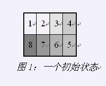
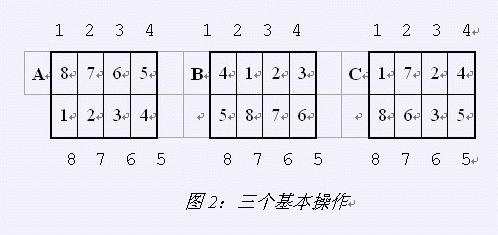

在魔方风靡全球之后，Rubik先生发明了它的简化版－－魔板，如图1所示，魔板由8个同样大小的方块组成，每个方块的颜色均不相同，本题中以数字1－8分别表示，可能出现在魔板的任一位置，任一时刻魔板的状态可以用方块的颜色序列表示：从魔板的左上角开始，按顺时针方向依次写下各方块的颜色代号，得到的数字序列即可表示此时魔板的状态。例如，序列（1,2,3,4,5,6,7,8）表示图1所示魔板的状态，这也就是题中魔板的初始状态。

对于魔板，可以施加三种不同的操作，分别以A，B，C标识。具体操作方法如下：
A：上下行互换；
B：上下两行同时循环右移一格；
C：中间4个方块顺时针旋转一格；
应用这三种基本操作，可以由任一状态达到任意另一状态。

图2描述了上述3种操作的具体含义，图中方格外面的数字标识魔板的8个方块位置，方格内的数字表示此次操作前该小方块所在位置。即：如果位置P中有数字I，则表示此次操作前该方块在位置I。
请编一程序，对于输入的一个目标状态，寻找一种操作的序列，使得从初始状态开始，经过此操作序无后使该魔板变为目标状态。并且这个操作序列应该尽量短。